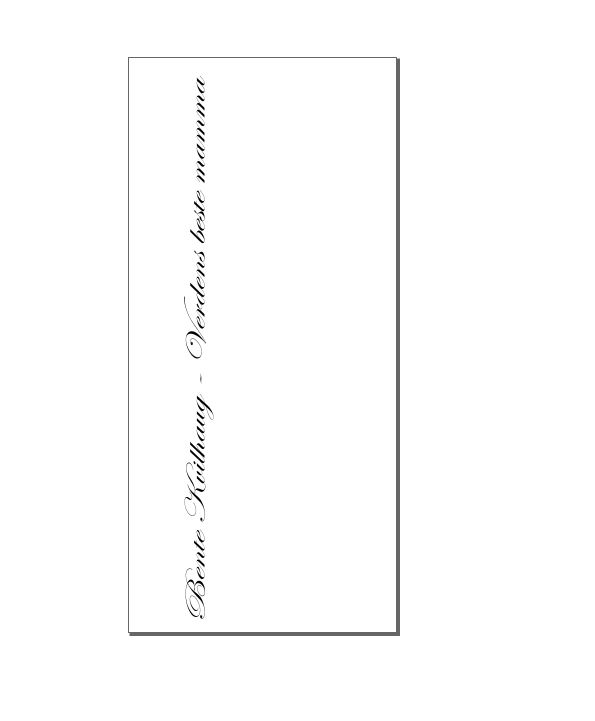
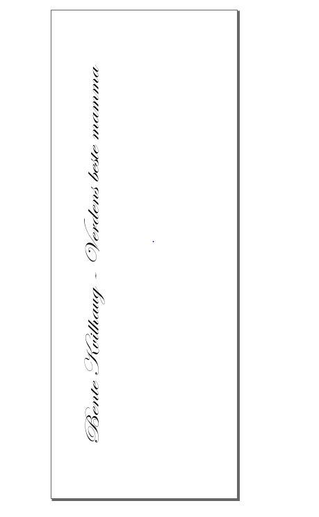
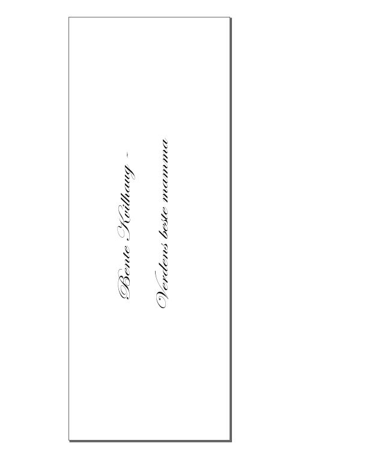
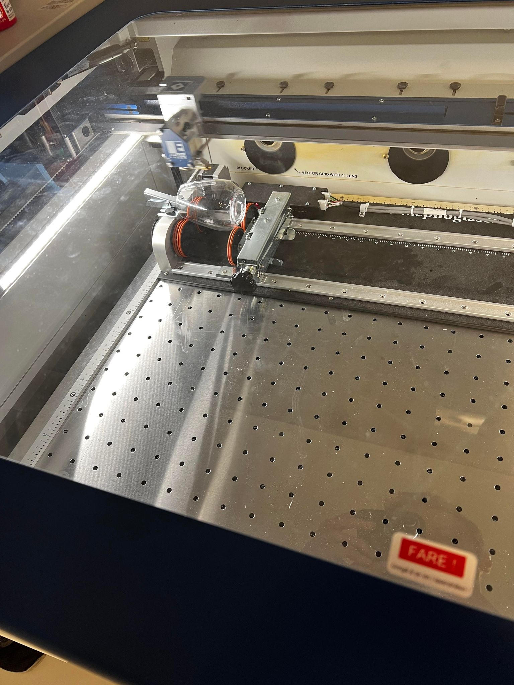
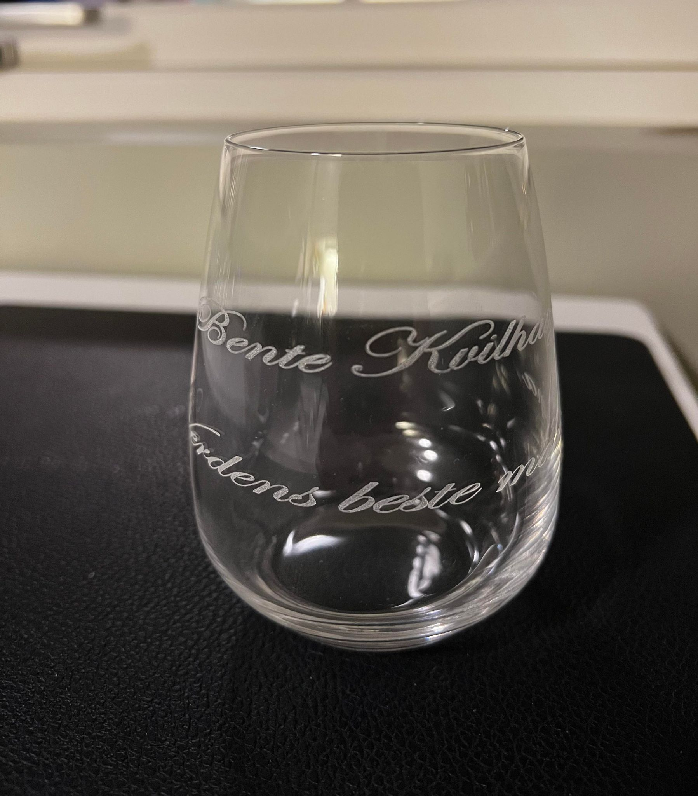

Prosjekt 7 - Lasergravering
For et prosjekt innenfor laserkutting har jeg valgt å lasergravere et glass. Da opplæring av laser kom i forkant av morsdagen fikk jeg en gyllen mulighet til å bruke skoleoppgaven med lasergravering til å lage en fin morsdagsgave. Jeg valgte å lasergravere egendefinert tekst på glass som jeg hadde kjøpt. Da vi måtte ha med hjelp ved første gravering av glass/ runde objekter fikk jeg hjelp av Overingeniør ved skolen til dette.
Utstyr
For prosjektet kjøpte jeg inn blyfrie glass som jeg skulle gravere. Dette var eneste av nødvendig utstyr foruten selve laserkutteren.
Design og feilgravering
Jeg ønsket å bruke egendefinert tekst som skulle på glasset, for å lage dette brukte jeg inkscape. Designet ble da slik:
Feilen med dette designet var at jeg hadde målet delen jeg skulle gravere på glasset, og ikke det bredeste av glasset. Jeg hadde altså målet slik:

Da jeg nevnte dette for veileder endret vi størrelsen til hva det var bredest på glasset, radiusen ble da endret fra 225mm til 275mm og ble seende slik ut:
Det førte til at området som skulle graveres ble kort og graveringen ville overlappet dersom vi ikke stoppet. Det ble seende slik ut:

Korrekt design og gravering
Etter feilprinten valgte jeg å fordele teksten over to linjer, noe som førte til at det ikke ville være fare for overlapp. Det gjorde også at graveringsjobben tok 5 minutter kontra 8 minutter tidligere. Designet ble da slik:
Dette designet fungerte mye bedre med graveringen og graveringsjobben gikk fint
Resultatet av graveringen ble da:
+ en veldig fornøyd mor